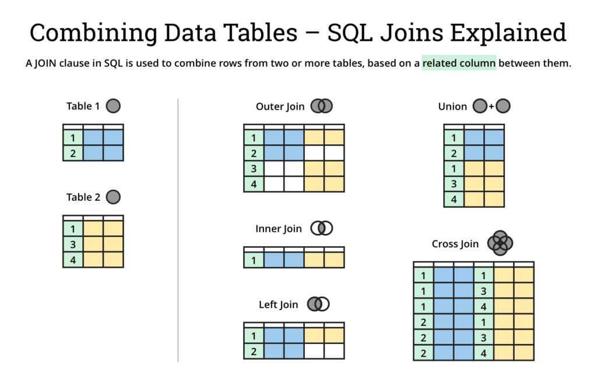

8 Basic Joins
8.1 Module Introduction
This module introduces the concept of joining tables in Oracle SQL as a result of normalized database design. Students will learn to use equijoins, inner joins, and outer joins (LEFT, RIGHT, FULL) to combine data from multiple related tables in the STUDENT schema.
8.2 Explanation
8.2.1 Normalization Introduction
Normalized databases are designed to reduce redundancy and improve data integrity by organizing data into related tables. This makes queries more efficient and ensures that updates are consistent across the system.
Reference: Lab 1.2
Why Normalize?
A monolithic table stores all related information in a single structure. While simple to understand, this approach introduces duplication and maintenance challenges. Normalization separates data into logically distinct entities and links them through keys.
Example
Monolithic Table:
| Student_ID | Name | ZIP | City | State |
|---|---|---|---|---|
| 100 | Alice Wong | 30303 | Atlanta | GA |
| 101 | Brian Lee | 30303 | Atlanta | GA |
| 102 | Carla Ruiz | 90210 | Beverly Hills | CA |
- Here, ZIP code data (
City,State) is repeated for every student. - Updating the city name for ZIP 30303 requires multiple changes.
Normalized Tables:
STUDENT Table:
| Student_ID | Name | ZIP |
|---|---|---|
| 100 | Alice Wong | 30303 |
| 101 | Brian Lee | 30303 |
| 102 | Carla Ruiz | 90210 |
ZIPCODE Table:
| ZIP | City | State |
|---|---|---|
| 30303 | Atlanta | GA |
| 90210 | Beverly Hills | CA |
- ZIP code information is stored once in the
ZIPCODEtable. - Student records reference ZIP via a foreign key.
This design eliminates redundancy and improves data consistency—if Atlanta is renamed, the change only happens in one row. However, it requires joins to retrieve complete information about students and their locations.
Reference: Lab 1.2
8.2.2 Visualizing Table Joins
All joins consist of linking sets of rows to each other. The type of join determines which rows we are interested in keeping in our output.
We are going to discuss each of these in greater detail. However, feel free to return to this visual reference to aid your understanding of the different ways in which you can join tables together.

8.2.3 Inner Joins and Equijoins
An inner join returns only the rows with matching values in both joined tables.
This is an inner join using the ANSI SQL syntax:
SELECT s.student_id, s.first_name, z.city, z.state
FROM student s
JOIN zipcode z ON s.zip = z.zip;This query combines student information with their corresponding city and state data.
An equijoin is a specific type of inner join that uses the equality operator = in the join condition.
This is the same query as above, but using the equijoin syntax:
SELECT s.student_id, s.first_name, z.city, z.state
FROM student s, zipcode z
WHERE s.zip = z.zip;This query produces the same result using the traditional Oracle join syntax.
- The ANSI syntax is generally preferred for readability and maintainability.
- When we join with an
ONstatement, it is clear which parts of the query relate to the joining logic and which parts relate to filtering based on conditions. - By contrast, relegating the join-logic to the
WHEREclause makes it harder to reason about which elements of the query relate to the join.
Reference: Lab 7.1
8.2.4 Outer Joins: LEFT, RIGHT, FULL
Outer joins include unmatched rows from one or both joined tables:
- LEFT OUTER JOIN: Includes all records from the left table and matched records from the right.
- RIGHT OUTER JOIN: Includes all records from the right table and matched records from the left.
- FULL OUTER JOIN: Includes all records when there is a match in one of the tables.
Example: Show all instructors and the sections they teach, including instructors without assigned sections.
SELECT i.instructor_id, i.first_name, s.section_id
FROM instructor i
LEFT JOIN section s ON i.instructor_id = s.instructor_id;This query returns all instructors, even those who are not currently teaching any sections.
Reference: Lab 10.1
8.3 Exercises
1. Basic Inner Join List each student’s ID, last name, and the city they live in. Use STUDENT and ZIPCODE.
2. Course Description by Section Show each SECTION_ID and the corresponding COURSE description. Use SECTION and COURSE.
3. Enrollments with Student Names List each enrollment with STUDENT_ID, student LAST_NAME, and the SECTION_ID. Use ENROLLMENT and STUDENT.
4. Instructors Without Sections List all instructors and their section IDs, including those who are not teaching a section. Use a LEFT JOIN.
5. Sections Without Instructors List all section IDs and their assigned instructor last names. Include sections that do not yet have an instructor.
6. Full Outer Join: Instructor and Section Write a full outer join query that shows all instructors and all sections, even if the match is missing on either side. Show INSTRUCTOR_ID, SECTION_ID, and LAST_NAME.
8.4 Q&A
In normalized schemas like the STUDENT database, understanding joins is essential to extract meaningful data across multiple tables. Outer joins help expose gaps, such as unassigned instructors or unenrolled students, which are often critical for reporting.
When choosing between inner and outer joins, ask: Do I need only the matches, or everything, including mismatches?
Discussion topics: * When to use different types of joins in reporting scenarios * Performance implications of various join types * How to identify which tables need to be joined for specific business questions * Common pitfalls when working with NULL values in outer joins
8.5 Additional Resources
- Oracle SQL by Example, Lab 7.1 – Equijoins
- Oracle SQL by Example, Lab 10.1 – Outer Joins
- Oracle 19c SQL Language Reference – Join Operations
8.6 Answers
1.
SELECT s.student_id, s.last_name, z.city
FROM student s
JOIN zipcode z ON s.zip = z.zip;2.
SELECT sec.section_id, c.description
FROM section sec
JOIN course c ON sec.course_no = c.course_no;3.
SELECT e.student_id, s.last_name, e.section_id
FROM enrollment e
JOIN student s ON e.student_id = s.student_id;4.
SELECT i.instructor_id, i.last_name, s.section_id
FROM instructor i
LEFT JOIN section s ON i.instructor_id = s.instructor_id;5.
SELECT s.section_id, i.last_name
FROM section s
LEFT JOIN instructor i ON s.instructor_id = i.instructor_id;6.
SELECT i.instructor_id, s.section_id, i.last_name
FROM instructor i
FULL OUTER JOIN section s ON i.instructor_id = s.instructor_id;